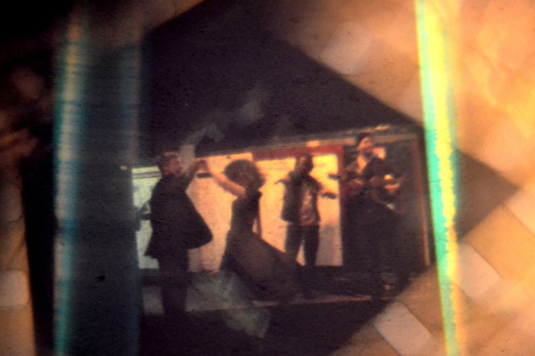
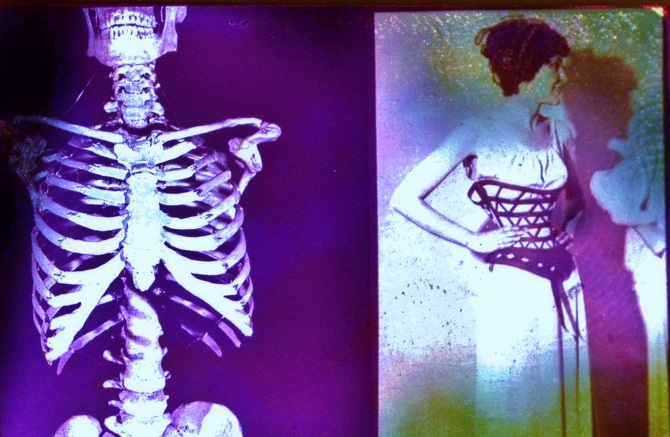
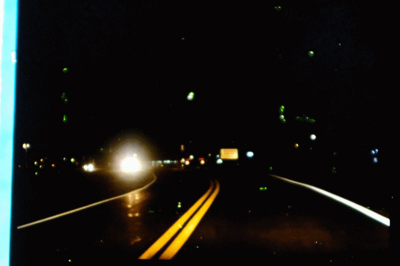

<!DOCTYPE html>
<html lang="es">
    <head>
        <meta charset="UTF-8">
        <meta name="viewport" content="width=device-width, initial-scale=1.0">
        <title> MARISOL BELLUSCI | Home </title>
        <link rel="stylesheet" href="./css/estilos.css">
        <link href="https://cdn.jsdelivr.net/npm/daisyui@4.12.14/dist/full.min.css" rel="stylesheet" type="text/css" />
        <link rel="stylesheet" href="https://cdnjs.cloudflare.com/ajax/libs/animate.css/4.1.1/animate.min.css"/>
        <script src="https://cdn.tailwindcss.com"></script>
        <link href="https://fonts.googleapis.com/css2?family=Orbitron:wght@400;700&display=swap" rel="stylesheet">

    </head>
    <body>
</html>

  <header class="bg-dark-green text-center py-4">
    <div class="container">
      <h1>MARISOL BELLUSCI</h1>
      <nav class="nav justify-content-center">
        <a class="nav-link text-black" href="./index.html">Home</a>
        <a class="nav-link text-black" href="./performance.html">Performance</a>
        <a class="nav-link text-black" href="#">Videoarte</a>
        <a class="nav-link text-black" href="./galeria.html">Galería</a>
        <a class="nav-link text-black" href="./contacto.html">Contacto</a>
      </nav>
    </div>
  </header>
   
      
    
        <div class="card-body">
          <h5 class="card-title ">SECUENCIA</h5>
          <p class="card-text">Videoarte/ 01;36 min / 2014 /

            Reutilización de celuloide encontrado. Intervenciones plásticas y analógicas con materiales traslucidos mediando entre la proyección y el dispositivo construido. Captura y edición digital subvirtiendo la continuidad y apuntando a las posibilidades de re-usar expresivamente el material fílmico.</p>
          <a href="https://vimeo.com/107666612" target="_blank"  class="btn btn-primary">VER VIDEO</a>
        </div>
        </div>
      
      <div class="card" aria-hidden="true">
        
        <div class="card-body">
          <h5 class="card-title placeholder-glow">
            <span class="placeholder col-6"></span>
          </h5>
          <p class="card-text placeholder-glow">
            <span class="placeholder col-7"></span>
            <span class="placeholder col-4"></span>
            <span class="placeholder col-4"></span>
            <span class="placeholder col-6"></span>
            <span class="placeholder col-8"></span>
          </p>
    
        </div>
      </div>

     
      </ul>
      <div class="card-body">
        <h5 class="card-title">DEBEN SABER</h5>
        <p class="card-text">Videoarte / 1 min. / 2015 /

          Reciclaje a partir de fragmentos de una una película encontrada en la calle. Enfatiza en la re- utilización del material fílmico con un proceso de intervención inusual de los soportes y medios audiovisuales, expandiendo los posibles errores impresos en el celuloide. Una de- construcción desde su forma de re-producción y posproducción, subvirtiendo la continuidad a través de proyecciones obsoletas, prismas, descalces, texturas y diapositivas intervenidas.</p>
        <a href="https://player.vimeo.com/video/218209375" target="_blank"  class="btn btn-primary">VER VIDEO</a>
      </div>
      </div>
    
    <div class="card" aria-hidden="true">
      
      <div class="card-body">
        <h5 class="card-title placeholder-glow">
          <span class="placeholder col-6"></span>
        </h5>
        <p class="card-text placeholder-glow">
          <span class="placeholder col-7"></span>
          <span class="placeholder col-4"></span>
          <span class="placeholder col-4"></span>
          <span class="placeholder col-6"></span>
          <span class="placeholder col-8"></span>
        </p>
      </div>
    </div>

     
  </ul>
  <div class="card-body">
    <h5 class="card-title">DECADENCIA</h5>
    <p class="card-text">Videoarte / 2 min. / 2018 /

      Operando sobre vestigios de film analógico, esta pieza pasa de ser solo un objeto material a ser una película reformada mediante la apropiación de un medio sobre otro (foto / video) yendo desde el material análogo a la información digital.
      Metraje encontrado utilizado de forma videográfica, para conformar un objeto de estética híbrida que re significa experimentalmente la narrativa de una película comercial.</p>
    <a href="https://player.vimeo.com/video/415199996" target="_blank"  class="btn btn-primary">VER VIDEO</a>
  </div>
  </div>

<div class="card" aria-hidden="true">
  
  <div class="card-body">
    <h5 class="card-title placeholder-glow">
      <span class="placeholder col-6"></span>
    </h5>
    <p class="card-text placeholder-glow">
      <span class="placeholder col-7"></span>
      <span class="placeholder col-4"></span>
      <span class="placeholder col-4"></span>
      <span class="placeholder col-6"></span>
      <span class="placeholder col-8"></span>
    </p>
  </div>
</div>

      <p clas|s="lead"> </p> </div>

  
  <footer class="bg-dark-green text-black text-center py-4">
    <div class="container">
      <p>&copy; 2024 tobias flores y marisol bellusci</p>
    </div>
  </footer>